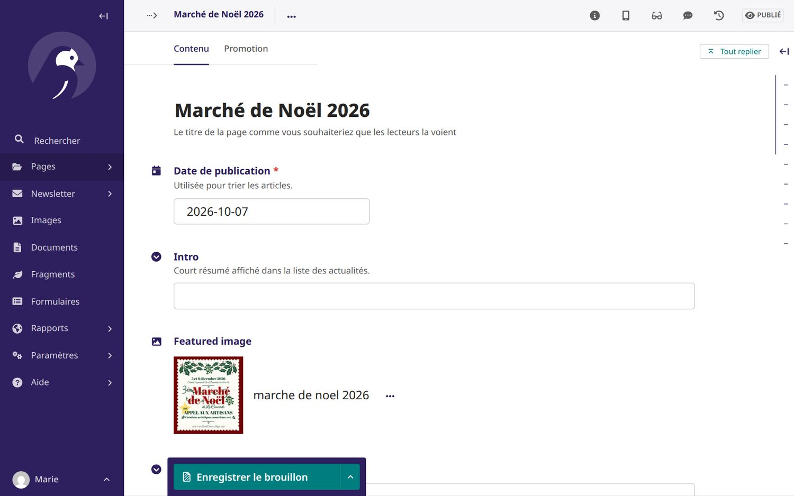

Guide pratique pour l'équipe de l'ASBL : site public, calendrier et location de salle, application théâtre, actualités, médias, newsletter et administration.
La Concorde asbl
Rue Émile Cornez 11 — 7387 Angre Version d'octobre 2026
Sommaire
Présentation générale du siteLes différents espaces, les profils d'utilisateurs et leurs droits, les adresses utiles
Premiers pasSe connecter, naviguer dans le menu, le bandeau cookies, la version mobile
Ce qu'il faut savoir avant de commencer : qui voit quoi, et où se gère chaque chose.
Le site de La Concorde asbl est à la fois une vitrine publique (présentation de l'ASBL, actualités, photos, agenda) et un outil de gestion interne pour l'équipe (location de la salle, contrats, billetterie du théâtre, newsletter). Il est construit avec le gestionnaire de contenu Wagtail : tout le contenu se modifie depuis un navigateur web, sans aucune connaissance technique.
Les quatre espaces du site
Espace
Adresse
À quoi il sert
Site public
/
Ce que voient tous les visiteurs : accueil, News, Médias, Info, Contact, calendrier, formulaire de demande de location, inscription à la newsletter.
Outils des membres (sur le site, une fois connecté)
/connexion/
Ajouter des activités au calendrier, proposer des actualités, traiter les demandes de location, rédiger les contrats, gérer le théâtre, envoyer des photos dans les albums.
Administration Wagtail
/admin/
Modifier le contenu des pages, les images, le menu, le pied de page, les coordonnées, la newsletter et ses abonnés, valider les actualités.
Administration Django
/django-admin/
Gestion « technique » : comptes utilisateurs et droits, et accès brut à toutes les données (réservations, théâtre…). À réserver aux responsables.
Bon à savoir
Les adresses de ce manuel sont à ajouter après le nom de domaine du site. Exemple : /admin/ correspond à https://www.la-concorde.be/admin/.
Les profils d'utilisateurs
Chaque personne de l'équipe dispose d'un compte personnel (identifiant + mot de passe). Ce que l'on peut faire dépend des droits attachés à ce compte.
Visiteur (non connecté)
Consulte le site et les activités publiques, demande la location de la salle, écrit via le formulaire de contact, s'inscrit à la newsletter.
Membre
Compte simple. Voit en plus les activités privées, ajoute ses propres activités au calendrier, propose des actualités (publiées après validation).
Administrateur
Compte avec le statut « équipe » (staff). Traite les demandes de location, rédige les contrats, suit les paiements, publie directement les actualités, ajoute des photos aux albums.
Accès Théâtre
Droit spécifique, cumulable avec les autres profils : donne accès à la billetterie et au plan de salle du théâtre (menu « Théâtre »).
Action
Visiteur
Membre
Administrateur
Voir les activités publiques du calendrier
✓
✓
✓
Voir les activités privées
—
✓
✓
Demander la location de la salle
✓
—
✓ (encodage direct)
Ajouter / modifier ses activités
—
✓
✓ (toutes)
Proposer une actualité
—
✓ (après validation)
✓ (publiée tout de suite)
Valider / refuser les demandes de location, contrats, paiements
—
—
✓
Envoyer des photos et vidéos dans un album
—
—
✓
Application Théâtre
—
uniquement avec le droit « Accès Théâtre »
La gestion de ces droits est expliquée au chapitre 11.
Chapitre 2
Premiers pas
Se connecter, se repérer dans le menu et utiliser le site sur téléphone.
Se connecter
Cliquez sur le bouton Connexion en haut à droite de n'importe quelle page (ou allez sur /connexion/).
Saisissez votre nom d'utilisateur et votre mot de passe, puis cliquez sur Se connecter.
Le bouton devient Déconnexion : pensez à l'utiliser sur un ordinateur partagé.
La page de connexion, commune au site, au calendrier et à l'application Théâtre.
Un seul compte pour tout
Le même identifiant sert pour le site, l'application Théâtre et l'administration Wagtail (/admin/), à condition d'avoir les droits correspondants.
Le menu principal
Le menu en haut de page contient les pages du site (Accueil, News, Médias, Contact, Info…), le lien Réservations vers le calendrier (ajouté automatiquement), une zone de recherche et le bouton de connexion. Une petite flèche ⌄ signale un sous-menu déroulant : il s'ouvre au survol de la souris (ou d'un toucher sur smartphone).
Pour les personnes qui ont l'accès Théâtre, une entrée Théâtre apparaît en plus, avec les raccourcis « Représentations » et « Réservations ». Les autres visiteurs ne la voient pas.
Une fois connecté avec l'accès Théâtre : le sous-menu « Théâtre » apparaît dans le menu principal.
Le bandeau « Votre vie privée » (cookies)
À la première visite, un bandeau demande au visiteur son accord pour les contenus externes (carte Google Maps, vidéos YouTube ou Facebook…). Le site lui-même n'utilise que des cookies techniques. Le visiteur peut Tout refuser, Personnaliser ou Tout accepter. S'il refuse, les cartes et vidéos sont remplacées par un message lui permettant de les activer. Le lien « Gérer les cookies » du pied de page rouvre ce bandeau.
Le bandeau de consentement aux cookies, en bas à gauche de l'écran.
Le texte du bandeau se modifie dans Wagtail : Paramètres → Consentement aux cookies.
Sur téléphone et tablette
Le site s'adapte automatiquement aux petits écrans. Le menu se replie derrière le bouton ☰ en haut à droite ; le calendrier, les formulaires et les galeries restent utilisables au doigt.
Accueil sur smartphone.Menu ouvert (bouton ☰).Calendrier sur smartphone.
Chapitre 3
Le site public, page par page
Ce que voient les visiteurs, et où se modifie chaque élément.
La page d'accueil
L'accueil se lit en faisant défiler la page ; chaque bloc apparaît en fondu. Elle se compose de :
un bandeau d'ouverture (grande photo, titre « Bienvenue à La Concorde », sous-titre et bouton) ;
deux sections automatiques : la dernière actualité (publiée au cours des 30 derniers jours) et les 5 prochaines activités du calendrier. Elles se remplissent toutes seules et disparaissent s'il n'y a rien à montrer ;
des sections en défilement libres (image + texte, ou 1 à 3 colonnes), avec des boutons de liens.
Le bandeau d'ouverture de la page d'accueil.Les sections automatiques : dernière actualité (à gauche) et prochaines activités du calendrier (à droite).
Exemple
Vous ajoutez au calendrier « Souper de la pétanque — 24 octobre ». Sans rien faire d'autre, l'activité apparaît dans « Prochaines activités » sur l'accueil, puis en disparaît d'elle-même une fois la date passée.
La page News présente les actualités de la plus récente à la plus ancienne, avec image, date et résumé. Les mots-clés en haut de page (#carnaval, #théâtre, #raclette…) filtrent la liste. Chaque actualité a sa propre page avec boutons de partage (Facebook, WhatsApp, e-mail…).
La liste des actualités et le filtre par mot-clé.Une actualité, avec ses boutons de partage.
Médias
La page Médias regroupe les albums photos (un album par spectacle ou événement), filtrables par année. Un album affiche ses vidéos puis ses photos ; un clic sur une image l'ouvre en grand dans une visionneuse (flèches ← → ou glisser du doigt, diaporama ▶, miniatures en bas).
La page Médias et ses albums.Les photos d'un album.
La visionneuse : photo en grand format, navigation et miniatures.
Info, Contact et pages libres
Info présente l'ASBL (historique, informations pratiques) avec des blocs de texte, images, encarts et liens. Contact propose un formulaire (nom, e-mail, objet de la demande, message), les coordonnées et une carte. Les messages envoyés arrivent par e-mail et restent consultables dans Wagtail (Formulaires).
La page Info.La page Contact et son formulaire.
Les pages libres (par exemple « Le Blé qui Lève » ou « La pétanque ») sont des pages composées librement : logo, titre, sections en défilement et galerie de miniatures. Elles peuvent être placées n'importe où et ajoutées au menu si on le souhaite.
Une page libre : « L'histoire du BQL ».
Newsletter, recherche et pied de page
La page Newsletter permet à chacun de s'inscrire (voir chapitre 9). La recherche du menu trouve les pages et actualités contenant un mot. Le pied de page reprend l'adresse, l'e-mail, les liens utiles (politique de confidentialité) et les réseaux sociaux.
La page d'inscription à la newsletter.Résultats d'une recherche sur « Noël ».
Chapitre 4
Calendrier et activités
L'agenda commun de l'ASBL, accessible via « Réservations » dans le menu (/calendrier/).
Lire le calendrier
Le calendrier affiche un mois à la fois. On change de mois avec les flèches ← → ou avec les listes déroulantes mois / année puis Afficher. Une activité de plusieurs jours apparaît sur chaque case concernée. Les couleurs indiquent la nature de l'occupation :
Vert : activité publique (visible par tous)
Orange : activité privée (visible uniquement par les personnes connectées)
Bordeaux : salle réservée (location validée)
Le calendrier vu par un visiteur : activités publiques et « Salle réservée ». Le « + » de chaque case permet de demander la salle.
Confidentialité
Pour une location validée, les visiteurs voient seulement « Salle réservée » : le nom et les coordonnées du locataire ne sont jamais affichés publiquement.
Ajouter une activité (membres connectés)
Connectez-vous, ouvrez le calendrier et cliquez sur le + du jour voulu (ou sur + Ajouter une activité sous le calendrier).
Un administrateur doit choisir entre Une activité et Une réservation de salle ; un membre arrive directement sur le formulaire d'activité.
Remplissez le nom, la description (facultative), la date de début et la date de fin (identiques pour un seul jour).
Choisissez la visibilité : publique ou privée. La couleur est attribuée automatiquement (modifiable si besoin).
Cliquez sur Ajouter l'activité.
Administrateur : choix entre activité et réservation de salle.Le formulaire « Ajouter une activité ».
Exemple : la répétition générale du Blé qui Lève
Clic sur le + du jeudi 19 novembre.
Nom : « Répétition générale BQL » ; date de début et de fin : 19/11/2026.
Visibilité : Privée — seuls les membres connectés la verront, en orange.
Modifier ou supprimer une activité
Cliquez sur l'activité dans le calendrier pour ouvrir sa fiche. Son auteur et les administrateurs y voient les boutons Modifier et Supprimer (une confirmation est demandée avant suppression).
La fiche d'une activité privée.
Chapitre 5
Location de la salle
De la demande en ligne au contrat signé et au remboursement de la caution.
Vue d'ensemble
#
Étape
Qui
Où
1
Demande de location
Le locataire (sans compte)
Calendrier → « + » sur un jour, ou bouton « Demander la réservation de la salle »
2
Validation ou refus
Administrateur
Calendrier → « Gérer les demandes de réservation »
3
Contrat de location (PDF)
Administrateur
Fiche de la réservation → « Rédiger le contrat de location »
4
Paiement du loyer et de la caution
Administrateur
« Suivi des paiements »
5
Remboursement de la caution
Administrateur
« Suivi des paiements »
1. La demande du locataire
Le visiteur clique sur le + d'un jour libre (ou sur le bouton sous le calendrier). Il indique s'il est un particulier ou une société (nom et n° de TVA), ses coordonnées, les dates souhaitées et des précisions (type d'événement, nombre de personnes…). Aucune inscription n'est nécessaire. Le formulaire est protégé contre les robots (champ piège et nombre d'envois limité).
Le formulaire public de demande de réservation de la salle.
La demande est enregistrée avec le statut « En attente de traitement ». Elle n'apparaît pas encore dans le calendrier public.
2. Traiter les demandes
Les administrateurs voient dans le calendrier un rappel « N demandes de réservation en attente de traitement ». La page Demandes de réservation de salle (/calendrier/reservations/) les liste toutes, avec un filtre par statut et des boutons d'action rapides.
La liste des demandes, avec filtres (Toutes, En attente, Validée, Refusée…) et boutons Valider / Refuser / Modifier.La fiche d'une demande en attente (ici une société) avec toutes les coordonnées.
Depuis la fiche ou la liste :
Valider la réservation : la salle apparaît « Salle réservée » dans le calendrier. La validation est refusée automatiquement si la salle est déjà occupée à ces dates.
Refuser la réservation : la demande est classée « Refusée ».
Annuler la réservation (réservation validée) : la salle redevient libre. S'il existe un contrat, il est marqué « annulé » dans le suivi des paiements, pour noter les remboursements. Le site signale alors les autres demandes en attente sur ces dates.
Rétablir la réservation : annule une annulation (si la salle est toujours libre).
Modifier cette réservation / Supprimer cette demande : corriger les dates ou coordonnées, ou effacer définitivement.
Important : prévenir le locataire
Le site n'envoie pas d'e-mail au demandeur quand sa demande est validée ou refusée. Contactez-le vous-même (e-mail ou téléphone repris sur la fiche).
Un administrateur peut aussi encoder directement une location reçue par téléphone : clic sur le + d'un jour → Une réservation de salle.
3. Rédiger le contrat de location
Sur la fiche d'une réservation validée, cliquez sur Rédiger le contrat de location. Le locataire et les dates sont repris automatiquement ; il reste à compléter :
le prénom et le nom du délégué de l'ASBL qui gère cette location ;
les locaux loués : salle des fêtes et scène, local café, cuisine équipée, sanitaires ;
le montant de la location et le montant de la caution ;
facultativement, la signature scannée du délégué (sinon : signature à la main).
Le formulaire du contrat de location, pré-rempli à partir de la réservation.
À l'enregistrement, le site produit un PDF complet (parties, dates, locaux, montants, articles, puis les annexes : mobilier, vaisselle, conditions de bruit), nommé par exemple Contrat de location - Vandenberghe Sarah - 2026-11-07.pdf. Il reste téléchargeable depuis la fiche de la réservation, et peut être modifié puis régénéré à tout moment.
Réservation validée avec son contrat : télécharger, modifier et régénérer.Première page du contrat PDF généré.
Exemple complet : l'anniversaire de Sarah Vandenberghe
Sarah demande la salle pour le samedi 7 novembre 2026 (« Anniversaire de 50 ans, environ 80 personnes »).
Marie, administratrice, ouvre Gérer les demandes, vérifie la date et clique sur Valider. Le 7 novembre affiche désormais « Salle réservée ».
Marie appelle Sarah pour confirmer, puis clique sur Rédiger le contrat de location : délégué « Marie Dupont », salle + café + cuisine + sanitaires, location 350 €, caution 250 €.
Le PDF de 10 pages se télécharge ; Marie l'imprime ou l'envoie à Sarah pour signature.
À la réception du virement, Marie coche « Payée » dans le Suivi des paiements et note la date et le n° d'extrait.
4. Suivi des paiements
Accessible depuis la liste des demandes (Suivi des paiements et des cautions), cette page contient une ligne par contrat généré. Trois compteurs résument les locations encaissées, les locations à encaisser et les cautions à rembourser. Les onglets filtrent : paiement attendu, caution à rembourser, dossiers clôturés, locations annulées.
Le suivi des paiements : cochez « Payée » / « Remboursée », complétez dates et n° d'extrait, puis « Enregistrer les modifications ».
5. Le contrat-type (articles, annexes, mise en page)
Le texte du contrat se modifie sans informaticien : page Contrat-type de location (lien depuis la liste des demandes). On peut y ajouter, modifier, réordonner ou retirer des articles, remplacer les annexes PDF jointes en fin de contrat, et changer l'image d'en-tête de la première page. Le bouton Aperçu du contrat-type (PDF) montre le résultat.
Les articles et annexes du contrat-type.La mise en page : image d'en-tête et voile blanc.
Les anciens contrats ne changent pas
Une modification du contrat-type ne s'applique qu'aux nouveaux contrats. Pour l'appliquer à un contrat existant, ouvrez la réservation et cliquez sur « Modifier et régénérer le contrat ».
Chapitre 6
Les actualités (News)
Partager un événement, une affiche ou un compte rendu, directement depuis le site.
Proposer une actualité depuis le site
Connectez-vous et ouvrez la page News.
Cliquez sur + Proposer une actualité.
Remplissez le titre, le résumé court (affiché dans la liste), le contenu, l'image mise en avant (facultative) et, si besoin, un lien (texte + adresse).
Cliquez sur Envoyer pour validation (« Publier l'actualité » pour un administrateur).
Le bouton « Proposer une actualité », visible une fois connecté.Le formulaire simplifié de proposition.
Le circuit de validation
L'actualité d'un administrateur est publiée immédiatement.
Celle d'un membre part en validation : elle n'est visible qu'après approbation. Le membre voit ses actualités en attente sur la page News.
Les modérateurs (groupe « Moderators » et super-utilisateurs) reçoivent un e-mail et la retrouvent dans le tableau de bord Wagtail, rubrique « En attente de votre relecture », où ils peuvent l'approuver ou la renvoyer avec un commentaire.
Une modification d'une actualité déjà publiée suit le même circuit : la version en ligne reste visible jusqu'à l'approbation.
Modifier ou supprimer
Sur le site, l'auteur voit les boutons Modifier et Supprimer sur ses propres actualités. Dans Wagtail (Pages → Accueil → News), un éditeur peut modifier toutes les actualités, avec une mise en forme plus riche : date de publication, mots-clés, citations, images dans le texte, encarts.

Édition d'une actualité dans Wagtail.
Attention à la mise en forme avancée
Une actualité enrichie dans Wagtail (citations, images dans le texte, encarts) doit être modifiée dans Wagtail : le formulaire simplifié du site ne conserve que les paragraphes de texte.
Conseils de rédaction
Un titre court et précis (« Marché de Noël 2026 » plutôt que « Info »).
Un résumé d'une ou deux phrases : c'est lui qui apparaît sur l'accueil et dans les partages.
Une image au format paysage ou une affiche : elle sert de vignette.
Quelques mots-clés récurrents (#théâtre, #carnaval…) pour que le filtre reste utile.
Chapitre 7
Médias : albums photos et vidéos
Publier les photos d'un spectacle ou d'un événement en quelques minutes.
Créer un album
Dans Wagtail : Pages → Accueil → Médias, cliquez sur Ajouter une sous-page → Album photo.
Indiquez le titre, la date (sert au classement par année), une description et une image de couverture.
Cliquez sur Publier (menu du bouton vert en bas).
L'édition d'un album dans Wagtail : titre, date, description, couverture.
Ajouter des photos en lot
Les administrateurs voient sur la page de l'album, côté site, les boutons + Ajouter des photos et + Ajouter une vidéo.
Cliquez sur + Ajouter des photos.
Glissez vos photos dans le cadre, ou cliquez pour les choisir (plusieurs à la fois : JPEG, PNG, WebP, GIF).
Choisissez la collection où ranger les images (facultatif), puis Ajouter ces photos.
Les photos sont envoyées par lots avec une barre de progression : laissez la page ouverte jusqu'à la fin.
La page d'un album vue par un administrateur.L'envoi groupé de photos.
Exemple : les photos de « La Martingale »
Après la dernière représentation, créez l'album « La Martingale » (date : 22/11/2026, couverture : la photo de troupe). Sur la page de l'album, cliquez sur « + Ajouter des photos », sélectionnez les 120 photos du dossier de l'appareil, puis patientez pendant l'envoi. Les photos s'ajoutent à la fin de l'album.
Ajouter une vidéo
Collez l'adresse de la vidéo (YouTube, Vimeo, Facebook, Dailymotion, Instagram ou TikTok — via le bouton « Partager » de la plateforme), ajoutez un titre facultatif, puis Ajouter la vidéo ou « Ajouter et en ajouter une autre ». La vidéo s'affiche au-dessus des photos et se lit dans la visionneuse.
Ajout d'une vidéo par son lien.
Réordonner, renommer, retirer
Pour changer l'ordre des photos, leurs légendes ou en retirer, éditez l'album dans Wagtail : chaque photo et vidéo s'y déplace par glisser-déposer.
Chapitre 8
L'application Théâtre
La billetterie interne : représentations, réservations, placement automatique et contrôle des entrées.
L'application se trouve dans le menu Théâtre (/theatre/). Elle n'est accessible qu'aux personnes connectées qui ont le droit « Peut accéder à l'application Théâtre » (voir chapitre 11). Les autres reçoivent un message « accès interdit ».
Le déroulement type d'une saison
#
Quand
Quoi
1
Annonce du spectacle
Créer une représentation par date, avec les tarifs adulte et enfant.
2
Semaines précédentes
Encoder les réservations reçues (téléphone, e-mail…), avec préférences de placement.
3
Quelques jours avant
Générer le plan de salle (placement automatique) et imprimer la liste des places.
4
Le soir même
Contrôle d'entrée : valider l'arrivée des spectateurs, imprimer les tickets, vendre les places libres (vente flash), déplacer si besoin.
5
Après la représentation
Consulter l'historique des tickets et le chiffre d'affaires.
1. Les représentations
La page d'accueil du théâtre se divise en deux : à gauche le formulaire Nouvelle représentation (nom du spectacle, date, prix adulte, prix enfant → Créer), à droite les représentations planifiées avec le nombre d'inscrits et les boutons Réserver, Plan et 🗑 (supprimer).
Les représentations de « La Martingale » (20, 21 et 22 novembre) et leurs tarifs.
2. Les réservations
Cliquez sur Réserver à côté d'une représentation. Indiquez le nom, le prénom, le nombre d'adultes et d'enfants ; le prix total se calcule en direct. Les préférences (rangée avant / centre / arrière, côté gauche / milieu / droite, ou une rangée précise de 1 à 6) et une remarque sont facultatives : le placement automatique en tient compte autant que possible.
Une nouvelle réservation et son prix estimé.La liste des réservations, avec recherche et filtre par représentation.
Exemple
Mme Dubois appelle pour 2 adultes et 1 enfant le vendredi 20 novembre, et précise qu'elle se déplace difficilement. Réservation : Dubois / Anne, 2 adultes, 1 enfant, préférence « Avant », remarque « Personne à mobilité réduite : place en bout de rangée ». Prix affiché : 2 × 12 € + 1 × 6 € = 30 €.
3. Le plan de salle
Bouton Plan → Générer le plan. Le site détermine le nombre de rangées nécessaire et place chaque réservation en gardant les groupes ensemble, en respectant au mieux les préférences. Si la salle est complète, les réservations sans place sont signalées.
Confirmation avant (re)génération du plan.
Regénérer efface le placement précédent
Si de nouvelles réservations arrivent après la génération, on peut regénérer le plan, mais tout le monde est replacé. Ne regénérez donc plus une fois les places communiquées ou le contrôle d'entrée commencé.
Le plan généré (places occupées / libres face à la scène) et le récapitulatif des placements.
Le bouton Imprimer la liste des places produit une liste alphabétique (nom, prénom, nombre de places, numéros attribués, montant) pratique pour l'accueil du public.
La liste imprimable des places attribuées.
4. Le contrôle d'entrée (le soir du spectacle)
Depuis le plan, cliquez sur Contrôle entrée. L'écran montre la salle en grand et un panneau de commande à gauche avec trois modes :
Mode
Utilisation
Entrée
Cliquez sur les places des spectateurs qui arrivent (elles passent en « sélectionnée »), vérifiez le montant affiché, puis Valider et imprimer : les tickets sont créés et une fenêtre d'impression s'ouvre.
Flash
Vente sur place d'une place libre : cliquez sur la place, indiquez nom et prénom, choisissez le tarif, puis Vendre cette place.
Déplacer
Cliquez sur une réservation pour la mettre en zone tampon (ses places sont libérées), puis sélectionnez les nouvelles places et placez-la depuis le tampon. On peut aussi la retirer du tampon pour lui rendre ses places d'origine.
L'écran de contrôle d'entrée : modes, sélection en cours, chiffre d'affaires et zone tampon à gauche ; plan de la salle à droite.
Exemple : la famille Delhaye arrive
Mode Entrée : cliquez sur les places 27 à 32 réservées au nom de Delhaye (4 adultes, 2 enfants).
Encaissez, puis Valider et imprimer : les 6 tickets s'impriment, les places passent en « Ticket valide ».
5. Historique des tickets
Le bouton Historique tickets liste tous les tickets imprimés (place, nom, statut, prix, heure) avec le total des tickets valides. Un ticket imprimé par erreur peut être annulé : il ne compte plus dans le total, et la place peut être validée à nouveau au contrôle d'entrée.
L'historique des tickets d'une représentation et le total encaissé.
Chapitre 9
La newsletter
Informer régulièrement le public par e-mail, dans le respect du RGPD.
Les inscriptions
Le public s'inscrit sur la page Newsletter du site. Si l'option « confirmation par e-mail » est activée (recommandé), l'abonné reçoit un lien à cliquer pour confirmer : il reste « En attente de confirmation » jusque-là. Chaque newsletter contient un lien personnel de désinscription.
Gérer les abonnés
Dans Wagtail : Newsletter → Abonnés. On y voit l'adresse, le nom, le statut (abonné, en attente, désinscrit), l'origine (formulaire du site ou ajout manuel) et la date d'inscription. On peut rechercher, filtrer, ajouter un abonné à la main et exporter la liste (CSV / Excel).
La liste des abonnés dans Wagtail.
Consentement
N'ajoutez à la main que des personnes qui ont clairement demandé à recevoir la newsletter. Ne supprimez pas un abonné « Désinscrit » : ce statut garantit qu'il ne recevra plus rien.
Rédiger une newsletter
Newsletter → Newsletters → Ajouter.
Remplissez l'en-tête : titre interne (pour vous repérer), objet de l'e-mail (ce que voient les destinataires), texte d'aperçu et formule d'appel (« Bonjour {prenom}, » : le prénom est inséré automatiquement).
Composez le contenu par blocs : titre, texte, image, bouton, actualités récentes (reprises automatiquement du site), page mise en avant, encadré, séparateur.
Le bouton Aperçu (en haut à droite) montre l'e-mail tel qu'il sera reçu, en version ordinateur ou mobile.
Enregistrez.
La rédaction d'une newsletter : bouton d'envoi, en-tête de l'e-mail puis contenu.
Envoyer
Dans la newsletter enregistrée, cliquez sur Préparer l'envoi de cette newsletter.
Envoyez un test à votre adresse (jusqu'à 5 adresses séparées par des virgules) et vérifiez le rendu sur ordinateur et téléphone.
Cochez la confirmation, puis Lancer l'envoi. Une dernière confirmation est demandée.
La page de suivi montre la progression : les e-mails partent par petits lots (environ 15 toutes les 5 minutes), ce qui ménage le serveur et évite les filtres anti-spam.
La page d'envoi : récapitulatif, envoi de test, puis envoi aux abonnés.
Un envoi ne se rattrape pas
Une fois lancé, l'envoi ne peut plus être annulé pour les messages déjà partis. Relisez toujours l'e-mail de test avant. Un abonné ne reçoit jamais deux fois la même newsletter.
Chapitre 10
L'administration Wagtail
Modifier les textes, images, menus et réglages du site (/admin/).
Le tableau de bord
Après connexion sur /admin/, la colonne de gauche donne accès à : Pages (l'arborescence du site), Newsletter, Images, Documents, Fragments (menu principal, pied de page), Formulaires (messages reçus par la page Contact), Paramètres et Aide. Les éléments à valider (actualités proposées par les membres) apparaissent sur le tableau de bord.
Le tableau de bord Wagtail.
Raccourci depuis le site
Une fois connecté comme éditeur, une petite icône d'oiseau apparaît en bas à droite de chaque page du site : elle permet d'ouvrir directement la page dans Wagtail pour la modifier.
Les pages
Pages → Accueil affiche les pages du site : Le Blé qui Lève, Newsletter, Info, La pétanque, Politique de confidentialité, Médias (contient les albums), Contact, News (contient les actualités). La flèche › à droite ouvre les sous-pages.
L'arborescence des pages sous « Accueil ».
Modifier une page
Cliquez sur le titre de la page.
Modifiez les champs dans l'onglet Contenu (l'onglet Promotion concerne le référencement).
Utilisez l'aperçu (icône en haut à droite) pour vérifier le rendu.
En bas : Enregistrer le brouillon (non visible du public) ou, via la petite flèche, Publier.
L'édition de la page d'accueil : titre, sous-titre, image et bouton du bandeau.
Historique et retour en arrière
Chaque publication est conservée. L'icône d'historique (horloge) permet de comparer ou de revenir à une version précédente en cas d'erreur.
Ajouter une page
Sur la page parente, Ajouter une sous-page, puis choisissez le type proposé (actualité sous News, album sous Médias, page d'informations ou page libre sous Accueil…).
Choix du type de page à créer.
Adresses réservées
Ne créez pas de page dont l'adresse (slug) serait « theatre », « calendrier », « admin », « recherche » ou « connexion » au premier niveau : ces adresses sont déjà utilisées par les applications du site.
Les images
Images rassemble toutes les photos du site. On peut y ajouter une image, la renommer, la ranger dans une collection et définir son point d'intérêt (la zone à garder visible quand l'image est recadrée).
La bibliothèque d'images.
Le menu principal et le pied de page
Dans Fragments → Menu principal, chaque élément a un libellé, une page du site (ou une adresse externe) et, facultativement, un sous-menu déroulant. Les flèches ↑ ↓ changent l'ordre. Le lien « Réservations » (calendrier) et le menu « Théâtre » sont ajoutés automatiquement : inutile de les créer. Le pied de page se gère de la même façon dans Fragments → Liens du pied de page.
L'édition du menu principal et de ses sous-menus.
Exemple : ajouter « La pétanque » dans un sous-menu « Nos sections »
Fragments → Menu principal → Menu principal.
Ajoutez un élément « Nos sections » sans page ni adresse.
Dans son « Sous-menu déroulant », ajoutez deux liens : « Le Blé qui Lève » et « La pétanque » (choisis avec le sélecteur de page).
Enregistrez : le sous-menu s'ouvre au survol.
Les paramètres du site
Paramètres → …
Contenu
Coordonnées & réseaux sociaux
Adresse, téléphone, e-mail et liens vers Facebook, Instagram… (plusieurs liens par réseau possibles, avec un libellé). Repris dans le pied de page et la page Contact.
Identité visuelle
L'icône du site affichée dans l'onglet du navigateur.
Consentement aux cookies
Activation, titre et texte du bandeau, lien vers la politique de confidentialité, durée de conservation du choix.
SEO
Informations sur l'organisation pour Google et les réseaux sociaux (logo, image de partage par défaut…).
Les coordonnées et les réseaux sociaux.
Le référencement (onglet Promotion)
Chaque page a un onglet Promotion : adresse de la page (slug), titre et description pour Google (sinon, le titre et le résumé de la page sont utilisés), et image de partage utilisée par Facebook ou WhatsApp quand on partage le lien.
L'onglet Promotion d'une actualité.
Chapitre 11
Gestion des utilisateurs et des droits
Réservé aux responsables : se fait dans l'administration Django (/django-admin/).
L'administration Django : utilisateurs et groupes, calendrier et réservations, théâtre, images…
Créer un compte
Authentification et autorisation → Utilisateurs → Ajouter.
Choisissez un nom d'utilisateur et un mot de passe provisoire, puis enregistrez.
Sur la fiche qui s'ouvre, complétez prénom, nom et e-mail, puis attribuez les droits ci-dessous.
Communiquez l'identifiant et le mot de passe à la personne, de préférence de vive voix.
Attribuer les droits
Pour…
Sur la fiche de l'utilisateur
Un membre simple
Laissez « Actif » coché, rien d'autre.
Un administrateur (location, contrats, photos, publication directe)
Cochez Statut équipe. Pour l'accès à Wagtail, ajoutez-le au groupe Editors (ou Moderators).
Un modérateur des actualités
Groupe Moderators : il reçoit un e-mail à chaque actualité proposée et peut l'approuver.
L'accès au Théâtre
Section « Permissions de l'utilisateur » : ajoutez theatre | acces application | Peut accéder à l'application Théâtre.
Un super-utilisateur
« Statut super-utilisateur » : tous les droits. À limiter à une ou deux personnes de confiance.
La fiche d'un utilisateur : statuts, groupes et permissions (ici, l'accès au Théâtre).
Donner l'accès Théâtre à toute une équipe
Créez un groupe (ex. « Équipe billetterie ») avec la permission Théâtre, puis ajoutez-y les personnes concernées : elles héritent toutes de l'accès, et il suffit de les retirer du groupe pour le leur enlever.
Départ d'un bénévole
Plutôt que de supprimer son compte (ce qui supprimerait aussi les activités qu'il a créées), décochez Actif : il ne peut plus se connecter et l'historique est conservé.
Chapitre 12
Bonnes pratiques et questions fréquentes
Les réflexes qui évitent les mauvaises surprises.
Questions fréquentes
« Je ne vois pas le menu Théâtre. »
Vérifiez que vous êtes connecté. Si c'est le cas, votre compte n'a pas la permission Théâtre : demandez-la à un responsable (chapitre 11).
« Le bouton Valider ne fonctionne pas pour une demande de location. »
Un message rouge indique que la salle est déjà occupée à ces dates (activité ou autre location). Libérez d'abord la date (déplacer l'activité, annuler l'autre location) ou contactez le demandeur pour une autre date.
« Mon actualité n'apparaît pas sur le site. »
Si vous êtes membre, elle attend la validation d'un modérateur : elle apparaît dans « vos actualités en attente » sur la page News. Si elle est publiée mais absente de l'accueil, c'est qu'elle date de plus de 30 jours (la section « Dernière actualité » ne montre que les actualités récentes).
« J'ai modifié une page mais rien n'a changé. »
Vous avez sans doute cliqué sur « Enregistrer le brouillon ». Ouvrez le menu du bouton vert et cliquez sur Publier.
« Une activité privée est visible du public ! »
Ouvrez l'activité, cliquez sur Modifier et vérifiez la visibilité « Privée ». Les activités privées s'affichent en orange et uniquement pour les personnes connectées.
« L'envoi des photos s'arrête. »
Gardez la page ouverte pendant tout l'envoi, sur une connexion stable. Les photos déjà envoyées restent dans l'album : relancez seulement avec celles qui manquent. Chaque photo doit faire au maximum 20 Mo (réduisez la taille si besoin).
« J'ai oublié mon mot de passe. »
Demandez à un responsable : il peut définir un nouveau mot de passe depuis votre fiche dans l'administration Django.
Bonnes pratiques
Déconnectez-vous sur les ordinateurs partagés (salle, bar, ordinateur portable de la billetterie).
Ne partagez pas un même compte entre plusieurs personnes : chacun son compte, pour savoir qui a fait quoi.
Traitez les demandes de location rapidement et prévenez toujours le demandeur (le site ne le fait pas).
Le soir d'un spectacle, prévoyez un ordinateur ou une tablette connecté à Internet et une imprimante pour les tickets ; imprimez la liste des places à l'avance comme solution de secours.
Testez toujours une newsletter en l'envoyant d'abord à vous-même.
Nommez clairement les images (« Martingale 2026 – troupe ») : elles seront plus faciles à retrouver.
Les données personnelles (locataires, spectateurs, abonnés) sont confidentielles : ne les exportez que si nécessaire et supprimez les fichiers après usage.
Aide-mémoire des adresses
Adresse
Page
/connexion/ · /deconnexion/
Se connecter / se déconnecter
/calendrier/
Calendrier des activités et des réservations
/calendrier/reservation/demander/
Formulaire public de demande de location
/calendrier/reservations/
Gérer les demandes de location (administrateurs)
/calendrier/reservation/paiements/
Suivi des paiements et des cautions
/calendrier/contrat-type/
Contrat-type : articles, annexes, mise en page
/ajouter-actualite/
Proposer une actualité
/theatre/
Application Théâtre : représentations
/theatre/reservations/
Application Théâtre : toutes les réservations
/admin/
Administration Wagtail (contenu, newsletter)
/django-admin/
Administration Django (utilisateurs et droits)
À propos de ce manuel
Les captures d'écran ont été réalisées avec des données d'exemple (noms, réservations et montants fictifs). L'apparence peut légèrement varier selon votre navigateur et la taille de votre écran.